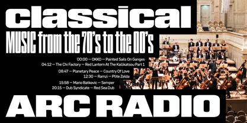
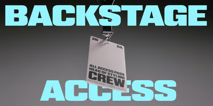

REFERENCE
묵직하게 화면을 때리는 폰트, “WTF HAMMER”리뷰


적용 사례
“WTF HAMMER”폰트는 굵은 획과 큼직한 글자 형태 덕분에 몇 글자만 올려도 화면의 중심을 단번에 잡아준다.
특히 레퍼런스처럼 타이틀을 크게 사용하면 단순히 정보를 전달하는 글자를 넘어 하나의 그래픽 오브제처럼 보이는 폰트다. 자간을 좁게 잡고 크게 배치하면 각각의 글자가 연결되면서 하나의 묵직한 덩어리처럼 느껴진다.
그래서 긴 문장보다는 짧고 강한 단어나 메시지에 특히 잘 어울린다. 이미지를 일부 가리거나 글자를 프레임 밖으로 과감하게 잘라내는 구성도 잘 어울린다. 크게 키우고, 겹치고, 잘라낼 때에도 WTF HAMMER 특유의 힘과 개성이 잘 살아난다.
본문보다는 키워드, 헤드라인, 포스터 타이틀처럼
‘한 방이 필요한 곳’에 쓰고 싶은 폰트.
특히 패션, 스포츠, 음악, 아웃도어처럼 강한 에너지와 임팩트가 필요한 비주얼에 사용하면 꽤 매력적이다.
다만 워낙 덩어리감과 존재감이 강해서 긴 문장이나 작은 크기의 본문용으로 사용하기보다는 크게 보여주는 디스플레이용 폰트로 활용하는 것이 더 잘 어울린다.
